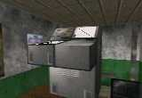
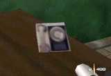
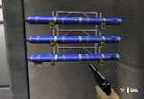
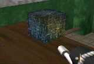

Je vous explique. On peut changer certains Objets du Jeu en Objets que l'on trouvait dans la Version Beta du Jeu. Avec un Code, l'Objet apparaît à la place d'un autre. Mais si on ramasse cet Objet, c'est comme si on avait ramassé celui qui est Modifié. Ainsi, dans Archives, on peut faire apparaître une Plante à la place de votre PP7 devant vous, mais si on la ramasse en avançant, on obtient un PP7. Voilà ! Ci-dessous, les Objets Beta que l'on peut faire apparaître. La Liste étant trop longue, je n'ai mis que ceux qui sont des Objets Beta.








Modifier le PP7 de Bond dans Archives 801B8CA9 00XX Modifier la 1ère Alarme du Bunker 801B6281 00XX Modifier la 2ème Alarme du Bunker 801B6301 00XX
Remplacez les XX par les Nombres ci-dessous pour faire apparaître les Objets !
00 Alarme 10 Ordinateurs 40 Téléphone 47 Digicode 4A Missiles 80 Extincteur F0 Boite Magique FC Porte Clé Lacrymo
Les Portes des Toilettes de Facility !


Même avec des Vitres, les Gardes ne vous voient pas.
89 Bizarre 97 Bleu Clair 99 Keep Clear A2 Bois et Verre
Le Code à rentrer à chaque fois, avec les X :
801AD7A1 00XX 801AD8A1 00XX 801AD9A1 00XX 801ADAA1 00XX 801ADBA1 00XX 801ADCA1 00XX 801ADDA1 00XX 801ADEA1 00XX 801ADFA1 00XX 801AE0A1 00XX 801AE1A1 00XX
Faire décoller l'Hélico de Frigate pendant l'Introduction de la Mission ?
801EAB07 0028 801EAB09 0020